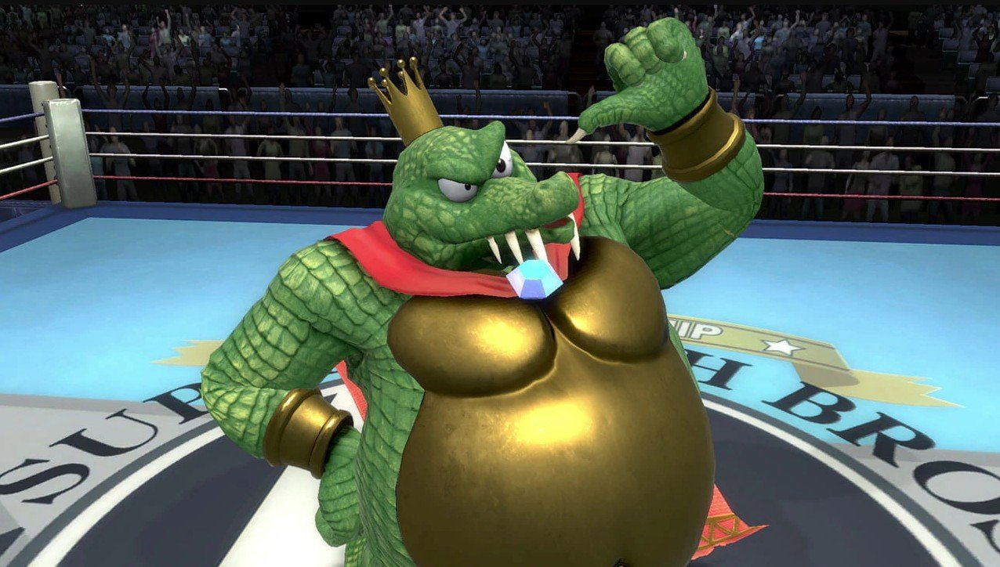
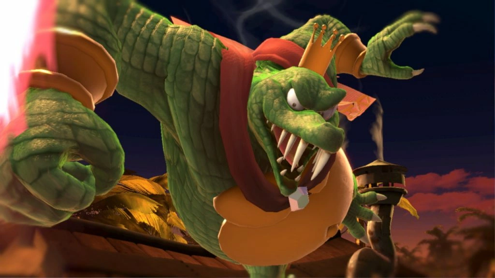
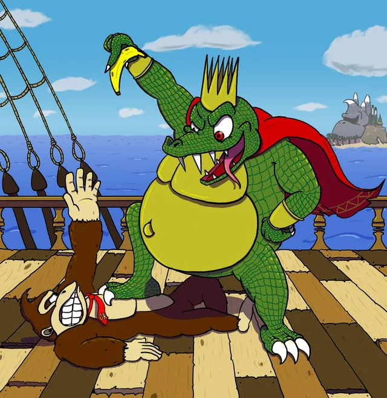
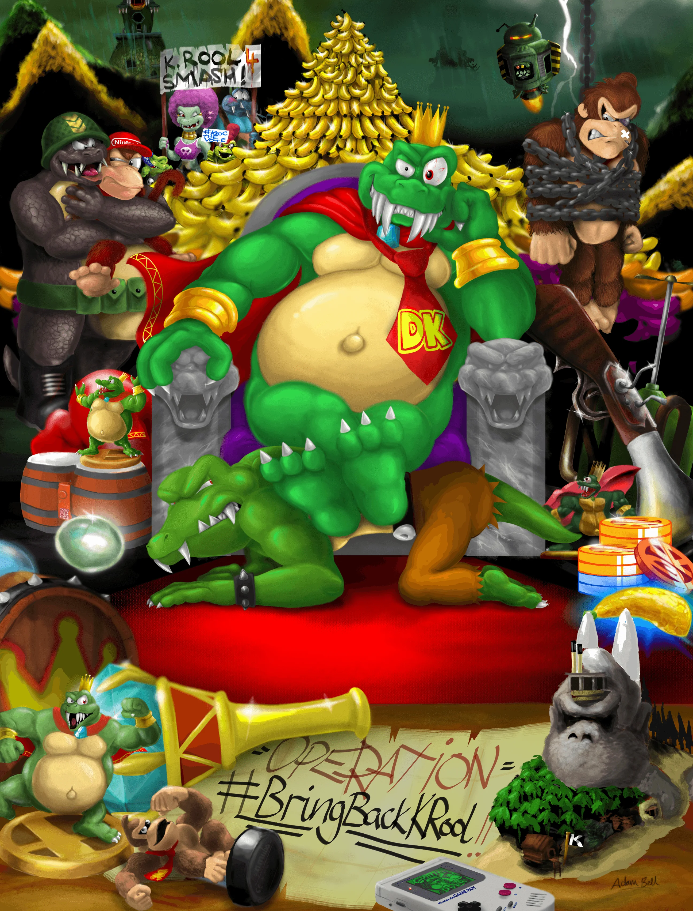
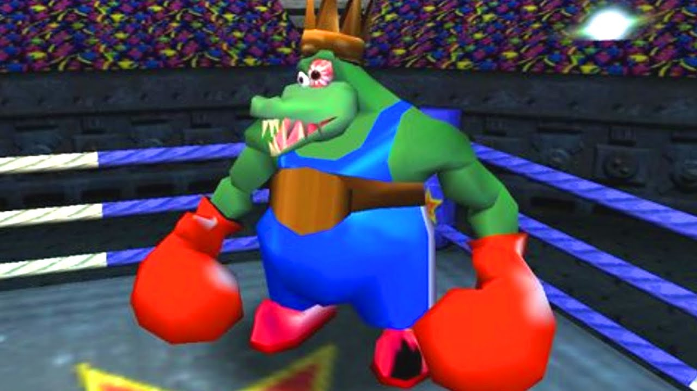

Home
What Is Smash Bros.?
My Smash Ultimate Mains
Frame Data: King K. Rool
About Sonic
Frame Data: Sonic
The Competitive Scene
Recommended Equipment
Fun Facts About Smash Bros.
Who Is King K. Rool?
King K. Rool is the main villain in a majority of Donkey Kong games. His first appearance was in 1994, when he starred as the final boss in Donkey Kong Country. He is associated with the Kremlings, a race of crocodile-like creatures. In addition, he is the leader of the Kremlings, and is the strongest out of all of them, too. He uses a wide variety of weapons, gadgets, and technology to cause havoc on the Donkey Kong crew. He often targets Donkey Kong Island, and starves the Kongs by stealing their banana hoard to take control of their island.
Fun Facts About King K. Rool
King K. Rool's name is based on a pun of the word "cruel", also implying his villainous nature.
K. Rool doesn't only go by K. Rool. He has several aliases, including "Kaptain K. Rool", "Baron K. Roolenstein", and "King Krusha K. Rool."
King K. Rool is known for kidnapping members of the Donkey Kong family on numerous occasions.
K. Rool has sported many different outfits and personas throughout the series.
In Donkey Kong Country 2 and Donkey Kong 64, King K. Rool displays his ability to turn invisible.
King K. Rool is very smart with anything relating to technology.
Despite having a slower archetype in Smash Bros., he is known for his above-average speed and agility in his home series.
King K. Rool appeared in a Super Mario manga called "KC Mario."
His name appears on a road sign in the game "Super Mario Odyssey" in the location "Metro Kingdom", where it reads "KROOL AV."


 

Home
What Is Smash Bros.?
My Smash Ultimate Mains
Frame Data: King K. Rool
About Sonic
Frame Data: Sonic
The Competitive Scene
Recommended Equipment
Fun Facts About Smash Bros.